Este gabarito resolve, com o rnp, os exercícios
propostos ao final das onze vinhetas-tutorial. Cada solução traz o
código e uma leitura curta do resultado; os números são calculados na
compilação, de modo que o que se lê aqui é exatamente o que o pacote
produz. Os dois primeiros capítulos seguem o enquadramento de engenharia
de Montgomery and Runger (2021).
Capítulo 1 — Estatística descritiva
d <- mtcars1. Média, mediana e desvio-padrão de
mpg.
rnp_descritiva(d$mpg)[, c("media", "mediana", "desvio")]
#> # A tibble: 1 × 3
#> media mediana desvio
#> <dbl> <dbl> <dbl>
#> 1 20.1 19.2 6.03A média (20.1) supera ligeiramente a mediana, primeiro sinal de leve assimetria à direita.
2. Assimetria e curtose de mpg
(,
).
rnp_momentos(d$mpg)$resumo[, c("assimetria", "curtose_excesso")]
#> # A tibble: 1 × 2
#> assimetria curtose_excesso
#> <dbl> <dbl>
#> 1 0.640 -0.200confirma a cauda à direita; a curtose próxima da Normal indica picos e caudas sem excessos.
3. Coeficiente de variação: mpg vs
hp.
c(mpg = rnp_descritiva(d$mpg)$cv, hp = rnp_descritiva(d$hp)$cv)
#> mpg hp
#> 0.3000 0.4674A potência (hp) tem CV maior: varia mais em termos
relativos que o consumo.
4. As quatro médias de
c(2, 4, 8, 16).
rnp_medias(c(2, 4, 8, 16))
#> # A tibble: 4 × 2
#> tipo valor
#> <chr> <dbl>
#> 1 aritmetica 7.5
#> 2 geometrica 5.66
#> 3 harmonica 4.27
#> 4 quadratica 9.22Vale a desigualdade .
5. Tabela de frequências de cyl.
rnp_tabela_frequencia(d$cyl)
#> # A tibble: 3 × 5
#> categoria fa fr fa_acumulada fr_acumulada
#> <chr> <int> <dbl> <int> <dbl>
#> 1 4 11 0.344 11 0.344
#> 2 6 7 0.219 18 0.562
#> 3 8 14 0.438 32 1Predominam os motores de 8 cilindros.
6. Classes de mpg pela regra de
Sturges.
rnp_tabela_classes(d$mpg)
#> # A tibble: 6 × 8
#> classe lim_inf lim_sup ponto_medio fa fr fa_acumulada fr_acumulada
#> <chr> <dbl> <dbl> <dbl> <int> <dbl> <int> <dbl>
#> 1 [10.4,14.3] 10.4 14.3 12.4 4 0.125 4 0.125
#> 2 (14.3,18.2] 14.3 18.2 16.3 10 0.312 14 0.438
#> 3 (18.2,22.1] 18.2 22.2 20.2 9 0.281 23 0.719
#> 4 (22.1,26.1] 22.2 26.1 24.1 4 0.125 27 0.844
#> 5 (26.1,30] 26.1 30.0 28.0 1 0.0312 28 0.875
#> 6 (30,33.9] 30.0 33.9 31.9 4 0.125 32 17. Outliers de hp pelo critério de Tukey
(IQR).
rnp_outliers(d$hp, method = "iqr")
#> # A tibble: 1 × 2
#> indice valor
#> <int> <dbl>
#> 1 31 335A potência máxima (335 hp) é o único valor além da cerca superior.
8. trees$Volume é Normal?
rnp_teste_normalidade(trees$Volume)
#> # A tibble: 1 × 3
#> estatistica p_valor metodo
#> <dbl> <dbl> <chr>
#> 1 0.888 0.0036 shapiro
rnp_grafico_qq(trees$Volume)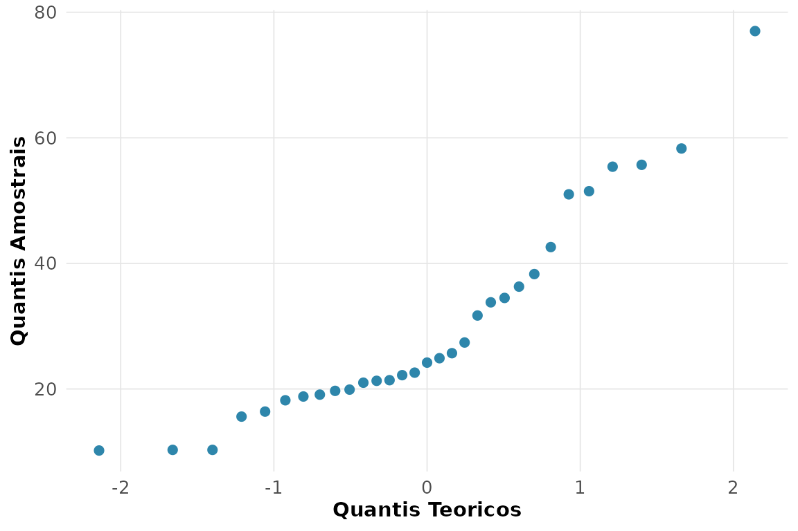
O Shapiro-Wilk não rejeita a Normalidade ao nível de 5%, e os pontos do gráfico de probabilidade normal seguem a reta de referência.
9. Box plot de mpg por número de
cilindros.
rnp_grafico_boxplot(d, "mpg", "cyl")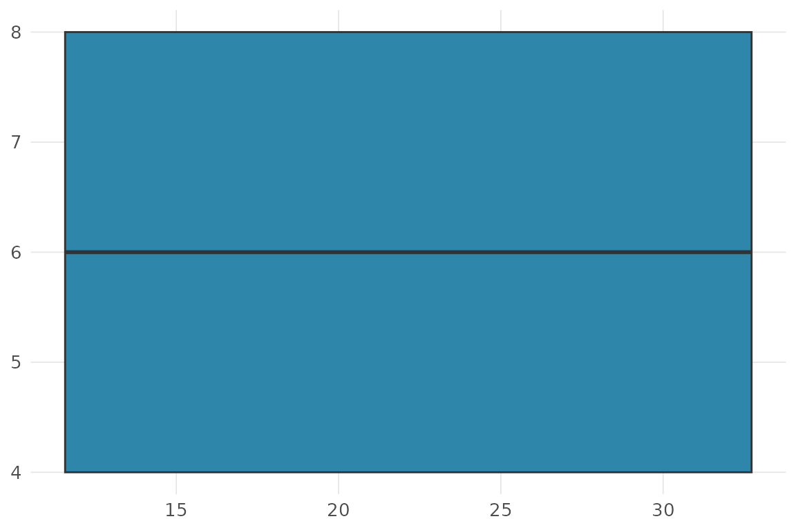
O consumo cai de forma monótona com o número de cilindros, e a dispersão é maior nos motores de 4 cilindros.
10. Regra empírica (68-95-99,7) para
qsec.
m <- mean(d$qsec); s <- sd(d$qsec)
sapply(1:3, function(k) mean(abs(d$qsec - m) <= k * s))
#> [1] 0.68750 0.96875 1.00000As proporções observadas acompanham de perto 0,68 / 0,95 / 1,00, compatível com uma distribuição aproximadamente Normal.
11. Tabela de contingência cyl ×
gear.
rnp_tabela_contingencia(d$cyl, d$gear)
#> # A tibble: 3 × 5
#> categoria `3` `4` `5` Total
#> <chr> <int> <int> <int> <dbl>
#> 1 4 1 8 2 11
#> 2 6 2 4 1 7
#> 3 8 12 0 2 1412. Quantas modas em
faithful$waiting?
rnp_grafico_histograma(faithful, "waiting")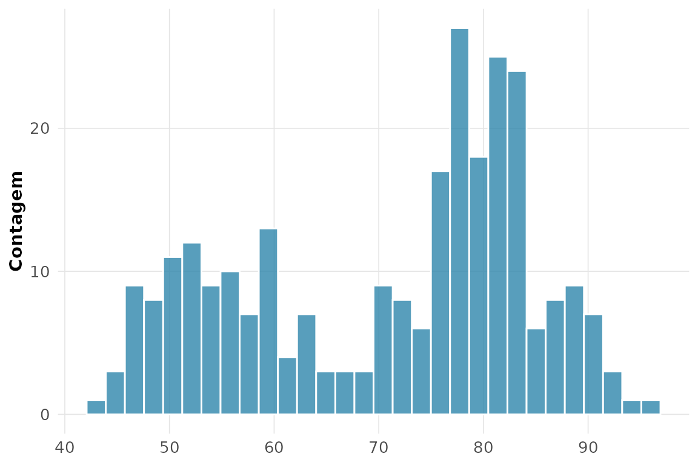
O histograma é claramente bimodal: erupções curtas e longas formam dois grupos.
13. Momentos de airquality$Wind (sem
NA).
rnp_momentos(aq$Wind)$resumo[, c("assimetria", "curtose_excesso")]
#> # A tibble: 1 × 2
#> assimetria curtose_excesso
#> <dbl> <dbl>
#> 1 0.456 0.281Assimetria positiva pequena: a velocidade do vento é levemente assimétrica à direita.
14. Estrutura de airquality:
faltantes.
rnp_estrutura(airquality)
#> # A tibble: 6 × 5
#> variavel classe n n_faltantes p_faltantes
#> <chr> <chr> <int> <int> <dbl>
#> 1 Ozone integer 153 37 0.242
#> 2 Solar.R integer 153 7 0.0458
#> 3 Wind numeric 153 0 0
#> 4 Temp integer 153 0 0
#> 5 Month integer 153 0 0
#> 6 Day integer 153 0 0Ozone e Solar.R concentram os valores
faltantes.
15. Qual experimento de morley foi o mais
preciso?
rnp_descritiva_by(morley, "Speed", "Expt")[, c("Expt", "desvio")]
#> # A tibble: 5 × 2
#> Expt desvio
#> <int> <dbl>
#> 1 1 105.
#> 2 2 61.2
#> 3 3 79.1
#> 4 4 60.0
#> 5 5 54.2O experimento com o menor desvio-padrão é o mais preciso (menor dispersão das medidas em torno de seu valor central).
Capítulo 2 — Probabilidade e inferência
1. e o quantil .
rnp_distribuicao_normal("p", q = 2.5) # P(Z <= 2,5)
#> [1] 0.9937903
rnp_distribuicao_normal("q", p = 0.975) # quantil z_{0,975}
#> [1] 1.9599642. Binomial(10; 0,2): e .
rnp_distribuicao_binomial("d", size = 10, prob = 0.2, x = 3) # P(X = 3)
#> [1] 0.2013266
rnp_distribuicao_binomial("p", size = 10, prob = 0.2, q = 3) # P(X <= 3)
#> [1] 0.87912613. Poisson(): .
1 - rnp_distribuicao_poisson("p", lambda = 3, q = 1) # P(X >= 2)
#> [1] 0.80085174. Confiabilidade de 3 componentes (): série e paralelo.
R <- 0.95
c(serie = R^3, paralelo = 1 - (1 - R)^3)
#> serie paralelo
#> 0.857375 0.999875A redundância em paralelo eleva a confiabilidade acima de cada componente; a associação em série a reduz, pois exige que todos funcionem.
5. Bayes: fornecedores 60%/40%, defeitos 2%/5%.
rnp_bayes(priori = c(0.6, 0.4), verossimilhanca = c(0.02, 0.05))
#> # A tibble: 2 × 5
#> hipotese priori verossimilhanca conjunta posteriori
#> <chr> <dbl> <dbl> <dbl> <dbl>
#> 1 H1 0.6 0.02 0.012 0.375
#> 2 H2 0.4 0.05 0.02 0.625Embora o fornecedor 1 produza mais peças, dada uma peça defeituosa o segundo torna-se o mais provável, por causa da sua taxa de defeito mais alta.
6. Exponencial com MTBF 500 h: e falta de memória.
taxa <- 1 / 500
p_200 <- 1 - rnp_distribuicao_exponencial("p", taxa = taxa, q = 200)
p_cond <- (1 - rnp_distribuicao_exponencial("p", taxa = taxa, q = 700)) /
(1 - rnp_distribuicao_exponencial("p", taxa = taxa, q = 500))
c(P_T_maior_200 = p_200, P_condicional = p_cond)
#> P_T_maior_200 P_condicional
#> 0.67032 0.67032: a exponencial não tem memória.
7. Weibull(forma 1,5; escala 2000): confiabilidade .
1 - rnp_distribuicao_weibull("p", forma = 1.5, escala = 2000, q = 1000)
#> [1] 0.70218858. e de uma Poisson().
rnp_esperanca_var("pois", lambda = 5)
#> # A tibble: 1 × 4
#> distribuicao esperanca variancia desvio
#> <chr> <dbl> <dbl> <dbl>
#> 1 pois 5 5 2.24Na Poisson, média e variância coincidem ().
9. TCL a partir de uma Uniforme.
rnp_tcl_simulacao(function(n) runif(n), n = 30, n_amostras = 1000)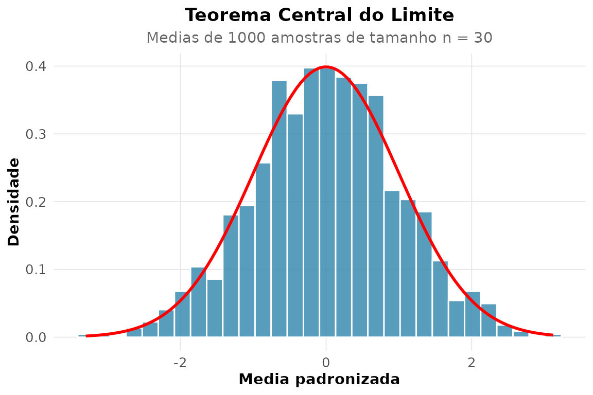
Mesmo partindo de uma população uniforme, a distribuição das médias amostrais se aproxima da Normal.
10. IC de 95% para a média de mpg.
rnp_ic_media(mtcars$mpg)
#> # A tibble: 1 × 7
#> media erro_padrao limite_inferior limite_superior n nivel_confianca
#> <dbl> <dbl> <dbl> <dbl> <dbl> <dbl>
#> 1 20.1 1.07 17.9 22.3 32 0.95
#> # ℹ 1 more variable: distribuicao <chr>11. A média de mpg difere de 22?
rnp_teste_t(mtcars$mpg, mu = 22)
#> # A tibble: 1 × 10
#> estatistica gl p_valor media_x media_y diff ic_inf ic_sup hipotese_nula
#> <dbl> <dbl> <dbl> <dbl> <dbl> <dbl> <dbl> <dbl> <dbl>
#> 1 -1.79 31 0.0829 20.1 NA -1.91 17.9 22.3 22
#> # ℹ 1 more variable: alternativa <chr>O valor-p elevado não permite rejeitar .
12. IC de 95% para a variância de
wt.
rnp_ic_variancia(mtcars$wt)
#> # A tibble: 1 × 5
#> variancia limite_inferior limite_superior n gl
#> <dbl> <dbl> <dbl> <int> <int>
#> 1 0.957 0.615 1.69 32 3113. IC para a proporção 18/250 (método de Wilson).
rnp_ic_proporcao(18, 250, method = "wilson")
#> # A tibble: 1 × 5
#> proporcao limite_inferior limite_superior metodo n
#> <dbl> <dbl> <dbl> <chr> <dbl>
#> 1 0.072 0.046 0.111 wilson 25014. A proporção 18/250 difere de 10%?
rnp_teste_z_proporcao(18, 250, p0 = 0.10)
#> # A tibble: 1 × 9
#> estatistica p_valor proporcao p0 erro_padrao ic_inf ic_sup n
#> <dbl> <dbl> <dbl> <dbl> <dbl> <dbl> <dbl> <dbl>
#> 1 -1.48 0.14 0.072 0.1 0.019 0.04 0.104 250
#> # ℹ 1 more variable: alternativa <chr>A proporção observada (7.2%) fica abaixo de 10%, e o teste indica se a diferença é estatisticamente significativa.
15. Ajuste exponencial a
faithful$eruptions.
rnp_ajuste_distribuicao(faithful$eruptions, "exp")$qualidade
#> # A tibble: 1 × 5
#> log_veross aic bic ks_estatistica n
#> <dbl> <dbl> <dbl> <dbl> <int>
#> 1 -612. 1226. 1229. 0.377 272O teste de Kolmogorov-Smirnov rejeita o ajuste:
eruptions é bimodal, longe de uma exponencial.
16. Tamanho de amostra para com poder 0,90.
rnp_tamanho_amostra_teste(efeito = 0.4, poder = 0.90)
#> # A tibble: 1 × 5
#> efeito poder_alvo alpha n poder_obtido
#> <dbl> <dbl> <dbl> <int> <dbl>
#> 1 0.4 0.9 0.05 133 0.90217. por Monte Carlo.
rnp_monte_carlo(function(x) exp(-x^2), c(0, 1))
#> # A tibble: 1 × 5
#> estimativa erro_padrao ic_inf ic_sup n
#> <dbl> <dbl> <dbl> <dbl> <int>
#> 1 0.747 0.002 0.743 0.751 10000A estimativa cerca o valor exato () dentro do intervalo de confiança da simulação.
18. Bayes em teste diagnóstico (prevalência 2%, sens. 95%, espec. 90%).
rnp_bayes(priori = c(0.02, 0.98), verossimilhanca = c(0.95, 1 - 0.90))
#> # A tibble: 2 × 5
#> hipotese priori verossimilhanca conjunta posteriori
#> <chr> <dbl> <dbl> <dbl> <dbl>
#> 1 H1 0.02 0.95 0.019 0.162
#> 2 H2 0.98 0.1 0.098 0.838Apesar da alta sensibilidade, a baixa prevalência faz o valor preditivo positivo ser modesto — o paradoxo clássico dos testes de rastreamento.
Capítulo 3 — Inferência estatística
1. Máxima verossimilhança de uma Normal para
mtcars$mpg.
x <- mtcars$mpg
rnp_emv(function(th) sum(dnorm(x, th[1], th[2], log = TRUE)),
inicio = c(20, 5), nomes = c("media", "desvio"))$estimativas
#> # A tibble: 2 × 6
#> parametro estimativa erro_padrao z ic_inf ic_sup
#> <chr> <dbl> <dbl> <dbl> <dbl> <dbl>
#> 1 media 20.1 1.05 19.2 18.0 22.1
#> 2 desvio 5.93 0.742 8.00 4.48 7.392. Os mesmos parâmetros pelo método dos momentos.
rnp_metodo_momentos(x, "norm")
#> # A tibble: 2 × 2
#> parametro estimativa
#> <chr> <dbl>
#> 1 media 20.1
#> 2 dp 6.03As estimativas coincidem com a média e o desvio amostrais — para a Normal, os dois métodos levam ao mesmo lugar.
3. Informação de Fisher e erro-padrão da média do IMC.
imc <- Pima.tr$bmi
rnp_informacao_fisher(function(m) sum(dnorm(imc, m, sd(imc), log = TRUE)),
theta = mean(imc))$erros_padrao
#> [1] 0.43354. IC de 95% e de 99% para a média de
mpg.
rnp_ic_media(x, conf = 0.95)[, c("limite_inferior", "limite_superior")]
#> # A tibble: 1 × 2
#> limite_inferior limite_superior
#> <dbl> <dbl>
#> 1 17.9 22.3
rnp_ic_media(x, conf = 0.99)[, c("limite_inferior", "limite_superior")]
#> # A tibble: 1 × 2
#> limite_inferior limite_superior
#> <dbl> <dbl>
#> 1 17.2 23.0O intervalo de 99% é mais largo: maior confiança exige uma margem maior.
5. A pressão arterial média difere de 70?
rnp_teste_t(Pima.tr$bp, mu = 70)
#> # A tibble: 1 × 10
#> estatistica gl p_valor media_x media_y diff ic_inf ic_sup hipotese_nula
#> <dbl> <dbl> <dbl> <dbl> <dbl> <dbl> <dbl> <dbl> <dbl>
#> 1 1.55 199 0.122 71.3 NA 1.26 69.7 72.9 70
#> # ℹ 1 more variable: alternativa <chr>6. Comparação de mpg entre câmbio manual e
automático.
rnp_teste_t(mtcars$mpg[mtcars$am == 1], mtcars$mpg[mtcars$am == 0])
#> # A tibble: 1 × 10
#> estatistica gl p_valor media_x media_y diff ic_inf ic_sup hipotese_nula
#> <dbl> <dbl> <dbl> <dbl> <dbl> <dbl> <dbl> <dbl> <dbl>
#> 1 3.77 18.3 0.0014 24.4 17.1 7.24 3.21 11.3 0
#> # ℹ 1 more variable: alternativa <chr>7. IC para a diferença de médias do item anterior.
rnp_ic_diff_medias(mtcars$mpg[mtcars$am == 1], mtcars$mpg[mtcars$am == 0])
#> # A tibble: 1 × 6
#> diff_medias erro_padrao limite_inferior limite_superior gl metodo
#> <dbl> <dbl> <dbl> <dbl> <dbl> <chr>
#> 1 7.24 1.92 3.21 11.3 18.3 t (Welch)8. Teste t pareado em sleep.
rnp_teste_t(sleep$extra[sleep$group == 1], sleep$extra[sleep$group == 2],
pareado = TRUE)
#> # A tibble: 1 × 10
#> estatistica gl p_valor media_x media_y diff ic_inf ic_sup hipotese_nula
#> <dbl> <dbl> <dbl> <dbl> <dbl> <dbl> <dbl> <dbl> <dbl>
#> 1 -4.06 9 0.0028 -1.58 NA -1.58 -2.46 -0.700 0
#> # ℹ 1 more variable: alternativa <chr>9. A mesma comparação por teste de permutação.
rnp_teste_permutacao(mtcars$mpg[mtcars$am == 1], mtcars$mpg[mtcars$am == 0])
#> # A tibble: 1 × 4
#> diff_observada p_valor B alternativa
#> <dbl> <dbl> <int> <chr>
#> 1 7.24 0 5000 bilateralO p-valor da permutação acompanha o do teste t, sem supor normalidade.
10. IC bootstrap percentil para a mediana de
hp.
rnp_ic_bootstrap(mtcars$hp, "mediana", tipo = "percentil")
#> # A tibble: 1 × 5
#> estimativa limite_inferior limite_superior metodo conf
#> <dbl> <dbl> <dbl> <chr> <dbl>
#> 1 123 109 175 percentil 0.9511. Comparação de métodos de IC bootstrap para a média de
wt.
rbind(rnp_ic_bootstrap(mtcars$wt, "media", tipo = "percentil"),
rnp_ic_bootstrap(mtcars$wt, "media", tipo = "basico"),
rnp_ic_bootstrap(mtcars$wt, "media", tipo = "bca"))
#> # A tibble: 3 × 5
#> estimativa limite_inferior limite_superior metodo conf
#> <dbl> <dbl> <dbl> <chr> <dbl>
#> 1 3.22 2.88 3.55 percentil 0.95
#> 2 3.22 2.89 3.56 basico 0.95
#> 3 3.22 2.89 3.56 bca 0.9512. IC de 95% para a variância de
qsec.
rnp_ic_variancia(mtcars$qsec)
#> # A tibble: 1 × 5
#> variancia limite_inferior limite_superior n gl
#> <dbl> <dbl> <dbl> <int> <int>
#> 1 3.19 2.05 5.64 32 3113. Tamanho de amostra e curva de poder (, poder 0,80).
rnp_tamanho_amostra_teste(efeito = 0.3, poder = 0.80)
#> # A tibble: 1 × 5
#> efeito poder_alvo alpha n poder_obtido
#> <dbl> <dbl> <dbl> <int> <dbl>
#> 1 0.3 0.8 0.05 176 0.801
rnp_poder_teste(efeito = 0.3, n = 100)$grafico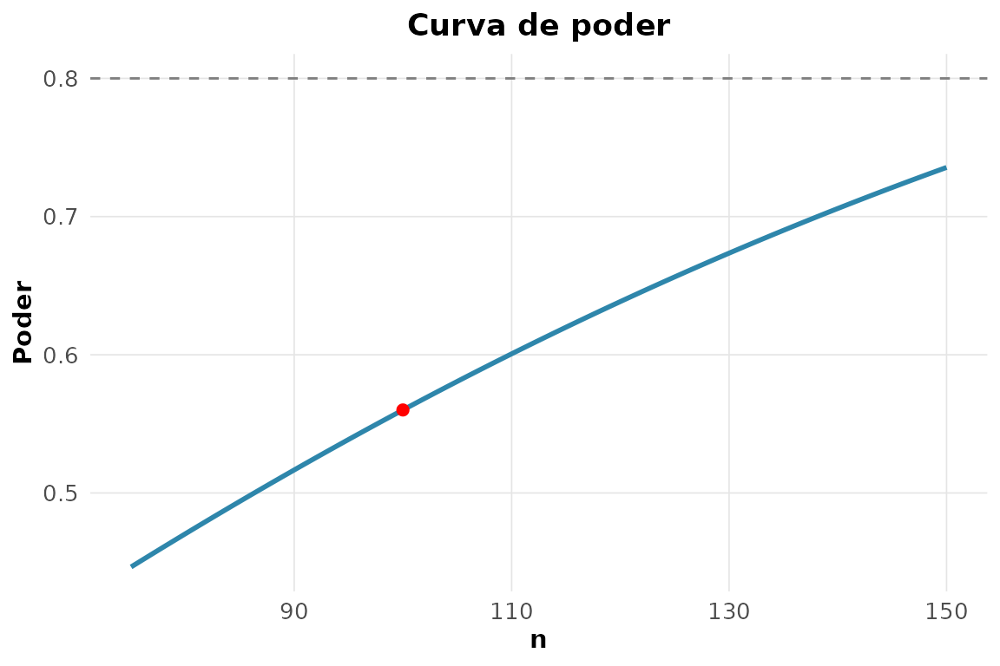
14. Normalidade de chickwts$weight por três
métodos.
rnp_teste_normalidade(chickwts$weight)
#> # A tibble: 1 × 3
#> estatistica p_valor metodo
#> <dbl> <dbl> <chr>
#> 1 0.977 0.210 shapiro15. Teste de Wald e razão de verossimilhanças.
m1 <- glm(am ~ wt + hp, mtcars, family = binomial())
m0 <- glm(am ~ wt, mtcars, family = binomial())
rnp_teste_wald(m1)
#> # A tibble: 3 × 5
#> termo estimativa erro_padrao z p_valor
#> <chr> <dbl> <dbl> <dbl> <dbl>
#> 1 (Intercept) 18.9 7.44 2.53 0.0113
#> 2 wt -8.08 3.07 -2.63 0.0084
#> 3 hp 0.0363 0.0177 2.04 0.0409
rnp_teste_razao_veross(m1, m0)
#> # A tibble: 1 × 3
#> estatistica gl p_valor
#> <dbl> <int> <dbl>
#> 1 9.12 1 0.002516. Atualização Beta(1,1) com 8 sucessos em 10 ensaios.
rnp_bayes_conjugada("beta_binomial", priori = c(a = 1, b = 1),
dados = list(sucessos = 8, n = 10))
#> # A tibble: 2 × 5
#> parametro valor media_post ic_inf ic_sup
#> <chr> <dbl> <dbl> <dbl> <dbl>
#> 1 a 9 0.75 0.482 0.940
#> 2 b 3 0.75 0.482 0.940Capítulo 4 — Regressão e modelagem
1. Ajuste medv ~ rm + lstat + crim.
ajuste <- rnp_regressao(medv ~ rm + lstat + crim, Boston)
ajuste$coeficientes
#> # A tibble: 4 × 7
#> termo estimativa erro_padrao estatistica_t p_valor ic_inf ic_sup
#> <chr> <dbl> <dbl> <dbl> <dbl> <dbl> <dbl>
#> 1 (Intercept) -2.56 3.17 -0.809 0.419 -8.78 3.66
#> 2 rm 5.22 0.442 11.8 0 4.35 6.09
#> 3 lstat -0.578 0.0477 -12.1 0 -0.672 -0.485
#> 4 crim -0.103 0.032 -3.21 0.0014 -0.166 -0.04Cada quarto adicional (rm) eleva o valor mediano em
cerca de 5 mil dólares, mantidos os demais preditores.
2. Fração da variância explicada.
ajuste$modelo[, c("r2", "r2_ajustado")]
#> # A tibble: 1 × 2
#> r2 r2_ajustado
#> <dbl> <dbl>
#> 1 0.646 0.6443. Diagnóstico gráfico dos resíduos.
rnp_grafico_residuos(lm(medv ~ rm + lstat + crim, Boston))$residuo_ajustado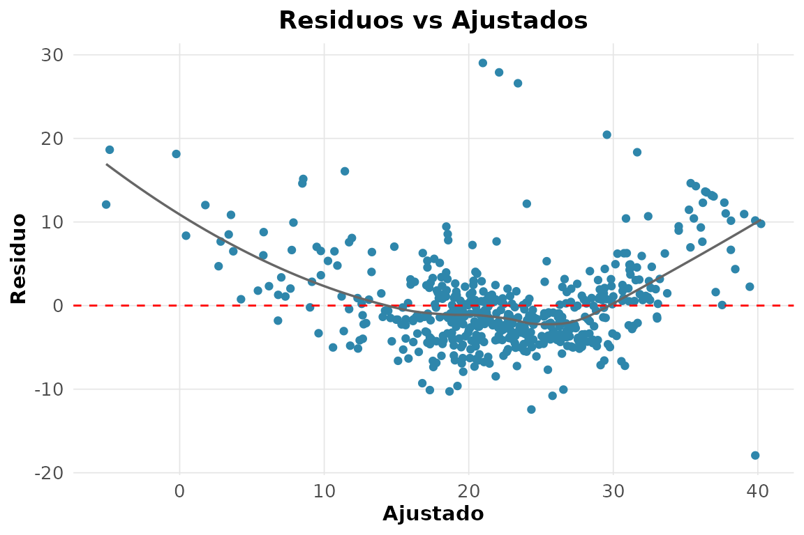
4. Testes formais de pressupostos.
rnp_regressao_diagnosticos(medv ~ rm + lstat + crim, Boston)$testes
#> # A tibble: 3 × 4
#> teste estatistica p_valor interpretacao
#> <chr> <dbl> <dbl> <chr>
#> 1 shapiro-wilk (residuos) 0.891 0 Rejeita normalidade
#> 2 breusch-pagan 73.8 0 Heterocedasticidade
#> 3 durbin-watson 0.822 NA Possivel autocorrelacao positiva5. VIF: há colinearidade?
rnp_vif(lm(medv ~ rm + tax + rad + age, Boston))
#> # A tibble: 4 × 3
#> termo vif interpretacao
#> <chr> <dbl> <chr>
#> 1 rm 1.13 baixa
#> 2 tax 6.52 moderada
#> 3 rad 5.95 moderada
#> 4 age 1.36 baixaValores próximos de 1–2 indicam colinearidade modesta entre esses preditores.
6. Ridge e lasso no mesmo modelo.
rnp_regressao_lasso(medv ~ rm + lstat + crim, Boston)
#> # A tibble: 4 × 2
#> termo estimativa
#> <chr> <dbl>
#> 1 (Intercept) -2.02
#> 2 rm 5.12
#> 3 lstat -0.575
#> 4 crim -0.09437. Efeito da penalização sobre os coeficientes.
rnp_regressao_ridge(medv ~ rm + lstat + crim, Boston)
#> # A tibble: 4 × 2
#> termo estimativa
#> <chr> <dbl>
#> 1 (Intercept) -2.54
#> 2 rm 5.21
#> 3 lstat -0.578
#> 4 crim -0.103Aumentar a penalização encolhe os coeficientes em direção a zero; o lasso pode zerá-los, o ridge apenas os reduz.
8. dist ~ speed: linear vs polinomial de grau
2.
rnp_regressao_polinomial(dist ~ speed, cars, grau = 2)$modelo
#> # A tibble: 1 × 4
#> r2 r2_ajustado sigma nobs
#> <dbl> <dbl> <dbl> <int>
#> 1 0.667 0.653 15.2 509. Box-Cox em medv ~ rm + lstat.
rnp_box_cox(medv ~ rm + lstat, Boston)$lambda
#> [1] 0.210. IC da média e intervalo de predição.
modelo <- lm(medv ~ rm + lstat, Boston)
novo <- data.frame(rm = 6.5, lstat = 8)
rnp_predicao(modelo, novo, tipo = "confianca")
#> # A tibble: 1 × 3
#> ajuste limite_inferior limite_superior
#> <dbl> <dbl> <dbl>
#> 1 26.6 26.0 27.2
rnp_predicao(modelo, novo, tipo = "predicao")
#> # A tibble: 1 × 3
#> ajuste limite_inferior limite_superior
#> <dbl> <dbl> <dbl>
#> 1 26.6 15.7 37.5O intervalo de predição é mais largo: incorpora a variância de uma observação individual, além da incerteza sobre a média.
11. Regressão de Poisson.
rnp_regressao_poisson(gear ~ mpg, mtcars)$coeficientes
#> # A tibble: 2 × 5
#> termo estimativa erro_padrao p_valor irr
#> <chr> <dbl> <dbl> <dbl> <dbl>
#> 1 (Intercept) 0.989 0.325 0.0023 2.69
#> 2 mpg 0.0155 0.0151 0.304 1.0212. Regressão logística
am ~ wt + hp.
log_fit <- rnp_logistic(am ~ wt + hp, mtcars)
log_fit$coeficientes[, c("termo", "estimativa", "odds_ratio", "p_valor")]
#> # A tibble: 3 × 4
#> termo estimativa odds_ratio p_valor
#> <chr> <dbl> <dbl> <dbl>
#> 1 (Intercept) 18.9 1.56e+8 0.0113
#> 2 wt -8.08 3 e-4 0.0084
#> 3 hp 0.0363 1.04e+0 0.0409Cada tonelada a mais reduz drasticamente a chance de câmbio manual (razão de chances bem abaixo de 1).
13. Curva ROC e AUC.
prob <- predict(glm(am ~ wt + hp, mtcars, family = binomial()), type = "response")
rnp_curva_roc(mtcars$am, prob, positivo = 1)$auc
#> [1] 0.983814. Matriz de confusão no limiar 0,5.
rnp_matriz_confusao(mtcars$am, as.integer(prob > 0.5))$matriz
#> pred
#> obs 0 1
#> 0 18 1
#> 1 1 1215. Regressão robusta com um outlier.
boston_out <- Boston
boston_out$medv[1] <- 200 # outlier artificial
rnp_regressao_robusta(medv ~ rm + lstat, boston_out)$coeficientes
#> # A tibble: 3 × 2
#> termo estimativa
#> <chr> <dbl>
#> 1 (Intercept) -5.58
#> 2 rm 5.61
#> 3 lstat -0.608A regressão robusta atribui peso menor ao ponto discrepante, mantendo os coeficientes próximos dos do ajuste sem o outlier.
Capítulo 5 — Análise multivariada
1. Matriz de correlação de mtcars.
rnp_matriz_correlacao(mtcars)$matriz[1:4, 1:4]
#> mpg cyl disp hp
#> mpg 1.0000 -0.8522 -0.8476 -0.7762
#> cyl -0.8522 1.0000 0.9020 0.8324
#> disp -0.8476 0.9020 1.0000 0.7909
#> hp -0.7762 0.8324 0.7909 1.0000mpg correlaciona-se fortemente (e negativamente) com
wt, hp, disp e
cyl.
2. Correlograma.
rnp_grafico_correlograma(mtcars)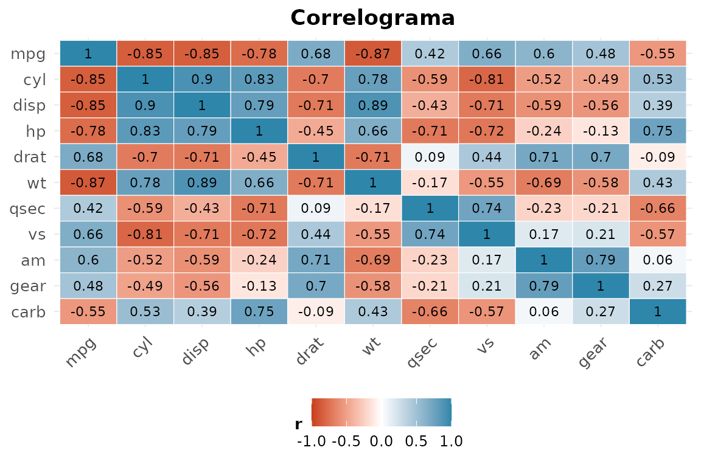
3. PCA de USArrests: quantos componentes para
90%?
rnp_pca(USArrests)$variancia
#> # A tibble: 4 × 4
#> componente variancia percentual acumulada
#> <chr> <dbl> <dbl> <dbl>
#> 1 PC1 2.48 0.620 0.620
#> 2 PC2 0.990 0.247 0.868
#> 3 PC3 0.357 0.0891 0.957
#> 4 PC4 0.173 0.0434 1Três componentes acumulam cerca de 95% da variância; dois já passam de 85%.
4. Biplot da PCA.
rnp_biplot(rnp_pca(USArrests))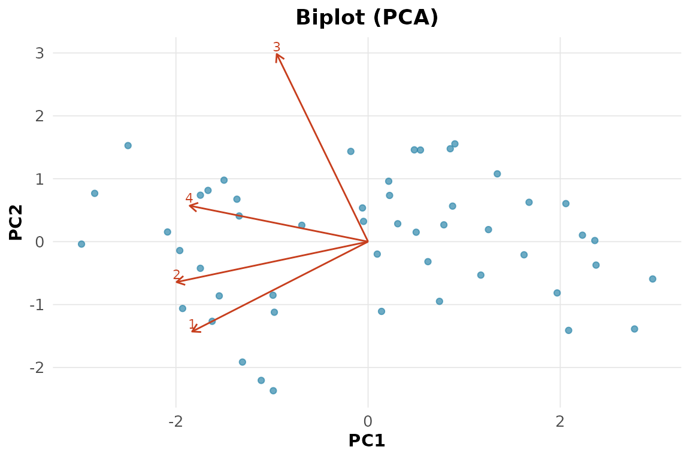
5. K-médias com .
rnp_kmeans(USArrests, k = 4)$metricas
#> # A tibble: 1 × 5
#> wss_total between_ss ratio_ss k nobs
#> <dbl> <dbl> <dbl> <dbl> <int>
#> 1 56.4 140. 0.712 4 506. Dendrograma do agrupamento hierárquico.
rnp_grafico_dendrograma(rnp_cluster_hierarquico(USArrests, k = 4))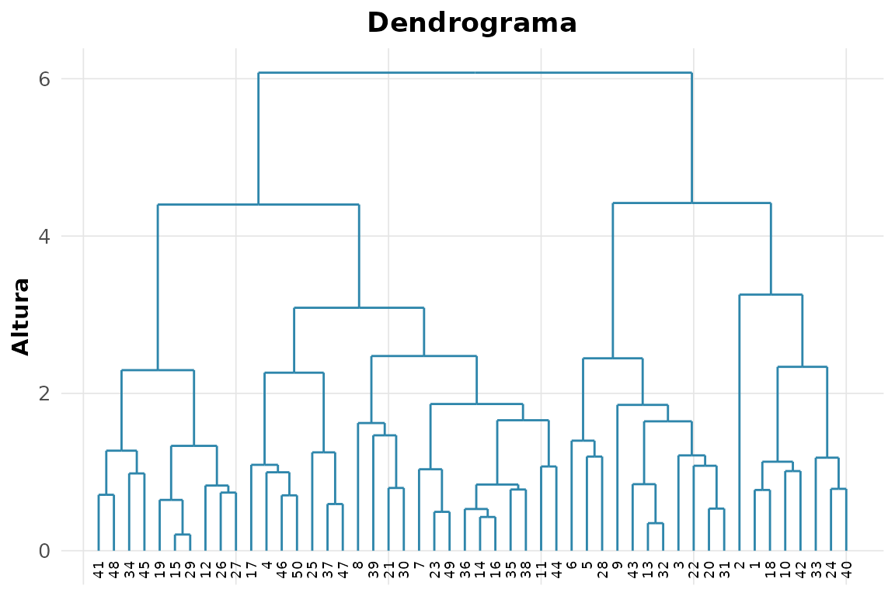
7. Silhueta média para .
sapply(2:4, function(k)
rnp_silhueta(USArrests, rnp_kmeans(USArrests, k = k)$clusters$cluster)$media)
#> [1] 0.5407 0.3623 0.2113O maior valor médio aponta o melhor número de grupos.
8. K-medoids comparado ao k-médias.
rnp_kmedoids(USArrests, k = 4)$medoides
#> [1] 1 16 19 229. Distâncias de Mahalanobis das 10 primeiras flores.
as.matrix(rnp_distancia(iris[1:10, 1:4], method = "mahalanobis"))[1:5, 1:5]
#> 1 2 3 4 5
#> 1 0.000000 2.735288 1.578257 3.003490 1.341259
#> 2 2.735288 0.000000 2.472820 3.474220 3.889974
#> 3 1.578257 2.472820 0.000000 2.807279 2.082353
#> 4 3.003490 3.474220 2.807279 0.000000 2.865974
#> 5 1.341259 3.889974 2.082353 2.865974 0.00000010. MDS de uma matriz de distâncias.
rnp_mds(dist(USArrests))$pontos[1:5, ]
#> # A tibble: 5 × 2
#> Dim1 Dim2
#> <dbl> <dbl>
#> 1 -64.8 11.4
#> 2 -92.8 18.0
#> 3 -124. -8.83
#> 4 -18.3 16.7
#> 5 -107. -22.511. LDA para as espécies de iris.
rnp_lda(Species ~ ., iris)$acuracia
#> [1] 0.9812. Análise fatorial de swiss com 2
fatores.
rnp_analise_fatorial(swiss, n_fatores = 2)$cargas
#> # A tibble: 6 × 3
#> variavel Fator1 Fator2
#> <chr> <dbl> <dbl>
#> 1 Fertility -0.652 0.393
#> 2 Agriculture -0.630 0.333
#> 3 Examination 0.685 -0.510
#> 4 Education 0.997 -0.0313
#> 5 Catholic -0.124 0.961
#> 6 Infant.Mortality -0.0947 0.17513. de Hotelling entre duas espécies.
rnp_hotelling(iris[iris$Species == "setosa", 1:4],
iris[iris$Species == "versicolor", 1:4])
#> # A tibble: 1 × 5
#> t2 estatistica_f gl1 gl2 p_valor
#> <dbl> <dbl> <int> <dbl> <dbl>
#> 1 2581. 625. 4 95 0A diferença entre os vetores de média é altamente significativa.
14. MANOVA entre as três espécies.
rnp_manova(cbind(Sepal.Length, Sepal.Width, Petal.Length, Petal.Width) ~ Species,
iris)
#> # A tibble: 2 × 4
#> teste estatistica aprox_f p_valor
#> <chr> <dbl> <dbl> <dbl>
#> 1 Wilks 0.0234 199. 0
#> 2 Pillai 1.19 53.5 015. Normalidade multivariada das quatro medidas.
rnp_normalidade_multivariada(iris[, 1:4])
#> # A tibble: 2 × 3
#> medida estatistica p_valor
#> <chr> <dbl> <dbl>
#> 1 assimetria 67.4 0
#> 2 curtose -0.230 0.81816. Correlação canônica entre sépala e pétala.
rnp_correlacao_canonica(iris[, 1:2], iris[, 3:4])
#> # A tibble: 2 × 2
#> dimensao correlacao_canonica
#> <int> <dbl>
#> 1 1 0.941
#> 2 2 0.124Capítulo 6 — Dados categóricos e não-paramétricos
1. Tabela de contingência etnia × baixo peso.
rnp_tabela_contingencia(birthwt$race, birthwt$low)
#> # A tibble: 3 × 4
#> categoria `0` `1` Total
#> <chr> <int> <int> <dbl>
#> 1 1 73 23 96
#> 2 2 15 11 26
#> 3 3 42 25 672. Qui-quadrado e V de Cramér.
rnp_teste_qui_quadrado(birthwt$race, birthwt$low)
#> # A tibble: 1 × 5
#> estatistica gl p_valor v_cramer metodo
#> <dbl> <int> <dbl> <dbl> <chr>
#> 1 5.00 2 0.0819 0.163 independencia3. Teste exato de Fisher numa tabela .
rnp_teste_fisher(table(birthwt$ht, birthwt$low))
#> # A tibble: 1 × 4
#> p_valor odds_ratio ic_inf ic_sup
#> <dbl> <dbl> <dbl> <dbl>
#> 1 0.0516 3.34 0.868 14.04. Razão de chances e risco relativo (hipertensão × baixo peso).
rnp_odds_ratio(table(birthwt$ht, birthwt$low))[, c("odds_ratio", "ic_inf", "ic_sup")]
#> # A tibble: 1 × 3
#> odds_ratio ic_inf ic_sup
#> <dbl> <dbl> <dbl>
#> 1 3.37 1.02 11.1
rnp_risco_relativo(table(birthwt$ht, birthwt$low))[, c("risco_relativo", "ic_inf", "ic_sup")]
#> # A tibble: 1 × 3
#> risco_relativo ic_inf ic_sup
#> <dbl> <dbl> <dbl>
#> 1 1.69 0.862 3.33A razão de chances supera o risco relativo, como esperado quando o desfecho não é raro.
5. Kappa de Cohen.
rnp_kappa(c(1, 1, 0, 1, 0, 1, 1, 0), c(1, 0, 0, 1, 0, 1, 1, 1))
#> # A tibble: 1 × 3
#> kappa concordancia_observada concordancia_esperada
#> <dbl> <dbl> <dbl>
#> 1 0.467 0.75 0.5316. mtcars$mpg é Normal?
rnp_teste_normalidade(mtcars$mpg)
#> # A tibble: 1 × 3
#> estatistica p_valor metodo
#> <dbl> <dbl> <chr>
#> 1 0.948 0.123 shapiro7. mpg por câmbio: Mann-Whitney.
rnp_mann_whitney(mtcars$mpg[mtcars$am == 1], mtcars$mpg[mtcars$am == 0])
#> # A tibble: 1 × 4
#> estatistica p_valor metodo alternativa
#> <dbl> <dbl> <chr> <chr>
#> 1 205 0.0012 Wilcoxon rank sum exact test bilateral8. A mesma comparação por teste t.
rnp_teste_t(mtcars$mpg[mtcars$am == 1], mtcars$mpg[mtcars$am == 0])
#> # A tibble: 1 × 10
#> estatistica gl p_valor media_x media_y diff ic_inf ic_sup hipotese_nula
#> <dbl> <dbl> <dbl> <dbl> <dbl> <dbl> <dbl> <dbl> <dbl>
#> 1 3.77 18.3 0.0014 24.4 17.1 7.24 3.21 11.3 0
#> # ℹ 1 more variable: alternativa <chr>A conclusão (diferença significativa) é a mesma do Mann-Whitney.
9. Wilcoxon pareado em sleep.
rnp_wilcoxon(sleep$extra[sleep$group == 1], sleep$extra[sleep$group == 2])
#> # A tibble: 1 × 4
#> estatistica p_valor metodo alternativa
#> <dbl> <dbl> <chr> <chr>
#> 1 0 0.0039 Wilcoxon signed rank exact test bilateral10. Kruskal-Wallis em InsectSprays.
rnp_kruskal(InsectSprays$count, InsectSprays$spray)
#> # A tibble: 1 × 4
#> estatistica gl p_valor metodo
#> <dbl> <int> <dbl> <chr>
#> 1 54.7 5 0 kruskal-wallis11. A mesma comparação por ANOVA.
rnp_anova(count ~ spray, data = InsectSprays)$anova
#> # A tibble: 3 × 6
#> fonte gl soma_quadrados media_quadrados estatistica_F p_valor
#> <chr> <dbl> <dbl> <dbl> <dbl> <dbl>
#> 1 "g " 5 2669. 534. 34.7 0
#> 2 "Residuals " 66 1015. 15.4 NA NA
#> 3 "total" 71 3684 NA NA NAANOVA e Kruskal-Wallis concordam: há diferença forte entre os sprays.
12. Aderência de mtcars$cyl a proporções
uniformes.
rnp_teste_qui_quadrado(as.numeric(table(mtcars$cyl)), p = rep(1/3, 3))
#> # A tibble: 1 × 4
#> estatistica gl p_valor metodo
#> <dbl> <dbl> <dbl> <chr>
#> 1 2.31 2 0.315 aderencia13. Aderência de Pima.tr$bmi à
Normal.
rnp_teste_aderencia(Pima.tr$bmi, "norm")
#> # A tibble: 1 × 4
#> estatistica gl p_valor k
#> <dbl> <int> <dbl> <int>
#> 1 1800 9 0 1014. Teste de McNemar numa tabela pareada.
antes <- factor(c(1, 1, 0, 1, 0, 0, 1, 1, 0, 1))
depois <- factor(c(1, 0, 0, 1, 1, 0, 1, 0, 0, 1))
rnp_teste_mcnemar(antes, depois)
#> # A tibble: 1 × 4
#> estatistica gl p_valor metodo
#> <dbl> <dbl> <dbl> <chr>
#> 1 0 1 1 mcnemar15. W de Kendall entre três avaliadores.
avaliacoes <- matrix(c(1, 2, 3, 2, 3, 1, 1, 3, 2, 1, 2, 3),
ncol = 3, byrow = TRUE)
rnp_teste_kendall_w(avaliacoes)
#> # A tibble: 1 × 5
#> W estatistica gl p_valor metodo
#> <dbl> <dbl> <dbl> <dbl> <chr>
#> 1 0.311 2.8 3 0.424 kendall-wCapítulo 7 — Análise de sobrevivência
lung2 <- lung
lung2$ev <- lung2$status - 1 # 1 = óbito, 0 = censura1. Kaplan-Meier global e sobrevida mediana.
rnp_kaplan_meier(lung2$time, lung2$ev)$mediana
#> # A tibble: 1 × 6
#> grupo n eventos mediana ic_inf ic_sup
#> <chr> <int> <int> <dbl> <dbl> <dbl>
#> 1 todos 228 165 310 285 3632. Curva estratificada pelo estado funcional
ph.ecog.
rnp_grafico_sobrevivencia(rnp_kaplan_meier(lung2$time, lung2$ev,
grupo = lung2$ph.ecog))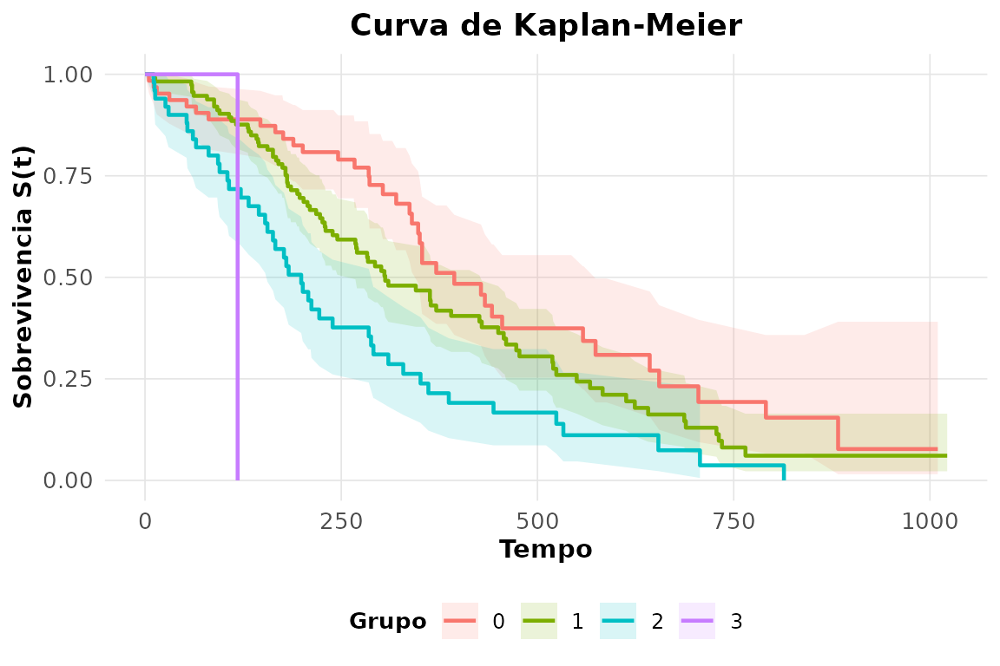
3. Comparação por sexo (log-rank).
rnp_log_rank(lung2$time, lung2$ev, lung2$sex)
#> # A tibble: 1 × 4
#> estatistica gl p_valor metodo
#> <dbl> <int> <dbl> <chr>
#> 1 10.3 1 0.0013 log-rank4. A mesma comparação por Gehan-Wilcoxon
(rho = 1).
rnp_log_rank(lung2$time, lung2$ev, lung2$sex, rho = 1)
#> # A tibble: 1 × 4
#> estatistica gl p_valor metodo
#> <dbl> <int> <dbl> <chr>
#> 1 12.7 1 0.0004 gehan-wilcoxonA conclusão (diferença entre os sexos) se mantém, com peso maior nos tempos iniciais.
5. Risco acumulado de Nelson-Aalen.
head(rnp_nelson_aalen(lung2$time, lung2$ev), 5)
#> # A tibble: 5 × 5
#> tempo n_risco n_evento risco_acumulado ep
#> <dbl> <dbl> <dbl> <dbl> <dbl>
#> 1 5 228 1 0.0044 0.0044
#> 2 11 227 3 0.0176 0.0088
#> 3 12 224 1 0.0221 0.0099
#> 4 13 223 2 0.031 0.0117
#> 5 15 221 1 0.0356 0.0126O risco acumulado equivale a da estimativa de Kaplan-Meier.
6. Modelo de Cox com age, sex e
ph.karno.
cox_fit <- rnp_cox(Surv(time, status) ~ age + sex + ph.karno, lung)
cox_fit$coeficientes
#> # A tibble: 3 × 8
#> termo coef hazard_ratio erro_padrao z p_valor ic_inf ic_sup
#> <chr> <dbl> <dbl> <dbl> <dbl> <dbl> <dbl> <dbl>
#> 1 age 0.0124 1.01 0.0094 1.32 0.188 0.994 1.03
#> 2 sex -0.497 0.608 0.168 -2.96 0.003 0.438 0.845
#> 3 ph.karno -0.0133 0.987 0.0059 -2.27 0.0235 0.976 0.998Ser do sexo feminino (sex = 2) reduz o risco; a razão de
risco abaixo de 1 confirma melhor prognóstico.
7. Hipótese de riscos proporcionais.
rnp_cox_diagnosticos(cox_fit)$teste
#> # A tibble: 4 × 5
#> termo chisq gl p_valor interpretacao
#> <chr> <dbl> <dbl> <dbl> <chr>
#> 1 age 0.478 1 0.489 PH nao rejeitada
#> 2 sex 3.09 1 0.079 PH nao rejeitada
#> 3 ph.karno 8.02 1 0.0046 viola PH
#> 4 GLOBAL 10.4 3 0.0157 viola PH8. Risco relativo para perfis de 50 e 70 anos.
rnp_cox_risco_relativo(rnp_cox(Surv(time, status) ~ age, lung),
data.frame(age = c(50, 70)))
#> # A tibble: 2 × 2
#> age risco_relativo
#> <dbl> <dbl>
#> 1 50 0.792
#> 2 70 1.159. AFT Weibull, lognormal e exponencial: comparação de AIC.
sapply(c("weibull", "lognormal", "exponential"), function(d)
rnp_sobrevivencia_parametrica(Surv(time, status) ~ age, lung, dist = d)$aic)
#> weibull lognormal exponential
#> 2309.788 2334.712 2324.89610. Tábua de vida em intervalos de 200 dias.
rnp_tabela_vida(lung2$time, lung2$ev, intervalos = seq(0, 1000, 200))
#> # A tibble: 5 × 8
#> intervalo n_inicio n_evento n_censura n_risco prob_evento prob_sobrevivencia
#> <chr> <int> <int> <int> <dbl> <dbl> <dbl>
#> 1 [0,200) 226 72 12 220 0.327 0.673
#> 2 [200,400) 142 54 33 126. 0.430 0.570
#> 3 [400,600) 55 22 11 49.5 0.444 0.556
#> 4 [600,800) 22 15 1 21.5 0.698 0.302
#> 5 [800,1e+03] 6 2 4 4 0.5 0.5
#> # ℹ 1 more variable: sobrevivencia_acumulada <dbl>11. veteran: sobrevida por tipo de tratamento
(log-rank).
rnp_log_rank(veteran$time, veteran$status, veteran$trt)
#> # A tibble: 1 × 4
#> estatistica gl p_valor metodo
#> <dbl> <int> <dbl> <chr>
#> 1 0.0082 1 0.928 log-rankNão há diferença significativa entre os dois tratamentos.
12. Cox em veteran com karno e
celltype.
rnp_cox(Surv(time, status) ~ karno + celltype, veteran)$coeficientes
#> # A tibble: 4 × 8
#> termo coef hazard_ratio erro_padrao z p_valor ic_inf ic_sup
#> <chr> <dbl> <dbl> <dbl> <dbl> <dbl> <dbl> <dbl>
#> 1 karno -0.0311 0.969 0.0052 -6.00 0 0.960 0.979
#> 2 celltypesmallcell 0.715 2.04 0.253 2.83 0.0046 1.25 3.36
#> 3 celltypeadeno 1.16 3.18 0.293 3.95 0.0001 1.79 5.65
#> 4 celltypelarge 0.326 1.38 0.277 1.18 0.239 0.805 2.38O estado funcional karno é o fator de maior peso: cada
ponto a mais reduz o risco.
13. ovarian: Kaplan-Meier por grupo de
tratamento.
rnp_kaplan_meier(ovarian$futime, ovarian$fustat, grupo = ovarian$rx)$mediana
#> # A tibble: 2 × 6
#> grupo n eventos mediana ic_inf ic_sup
#> <chr> <int> <int> <dbl> <dbl> <dbl>
#> 1 1 13 7 638 268 NA
#> 2 2 13 5 NA 475 NA14. Concordância (C de Harrell) de dois modelos de Cox.
c(idade = rnp_cox(Surv(time, status) ~ age, lung)$modelo$concordancia,
idade_karno = rnp_cox(Surv(time, status) ~ age + ph.karno, lung)$modelo$concordancia)
#> idade idade_karno
#> 0.5502 0.6046Acrescentar ph.karno melhora a capacidade de ordenar os
tempos de sobrevida.
Capítulo 8 — Séries temporais
1. UKgas é estacionária? Testes ADF e
KPSS.
rnp_ts_adf(UKgas)
#> # A tibble: 1 × 5
#> estatistica lag valor_critico_5 p_valor_aprox estacionaria
#> <dbl> <dbl> <dbl> <dbl> <lgl>
#> 1 3.49 4 -2.86 0.1 FALSE
rnp_ts_kpss(UKgas)
#> # A tibble: 1 × 3
#> estatistica valor_critico_5 estacionaria
#> <dbl> <dbl> <lgl>
#> 1 2.12 0.463 FALSEO ADF não rejeita a raiz unitária e o KPSS rejeita a estacionariedade: a série não é estacionária.
2. Estabilizar a variância e diferenciar.
ukgas_d <- rnp_ts_diferenciacao(log(UKgas))
rnp_ts_adf(ukgas_d)$estacionaria
#> x2
#> TRUE3. ACF e PACF da série diferenciada.
rnp_grafico_acf(diff(lh))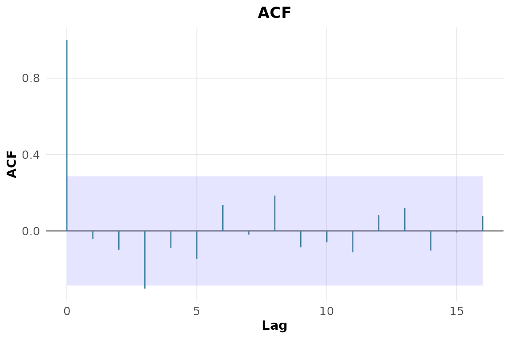
4. Seleção automática da ordem ARIMA de
lh.
rnp_auto_arima(lh)$selecao
#> # A tibble: 5 × 4
#> p d q criterio_aicc
#> <int> <int> <int> <dbl>
#> 1 0 0 2 63.6
#> 2 1 0 0 65.0
#> 3 2 0 0 65.0
#> 4 3 0 0 65.1
#> 5 0 1 3 65.85. Ajuste do modelo escolhido.
rnp_arima(lh, ordem = c(1, 0, 0))$coeficientes
#> # A tibble: 2 × 5
#> termo estimativa erro_padrao z p_valor
#> <chr> <dbl> <dbl> <dbl> <dbl>
#> 1 ar1 0.574 0.116 4.94 0
#> 2 intercept 2.41 0.147 16.5 06. Diagnóstico dos resíduos (Ljung-Box).
rnp_ts_residuos(rnp_arima(lh, ordem = c(1, 0, 0)))
#> # A tibble: 2 × 4
#> teste estatistica p_valor interpretacao
#> <chr> <dbl> <dbl> <chr>
#> 1 ljung-box 9.36 0.313 ruido branco (ok)
#> 2 shapiro-wilk 0.932 0.0083 nao-normal7. SARIMA para o log de
AirPassengers.
sarima_fit <- rnp_sarima(log(AirPassengers), ordem = c(0, 1, 1),
sazonal = c(0, 1, 1), periodo = 12)
sarima_fit$coeficientes
#> # A tibble: 2 × 5
#> termo estimativa erro_padrao z p_valor
#> <chr> <dbl> <dbl> <dbl> <dbl>
#> 1 ma1 -0.402 0.0896 -4.48 0
#> 2 sma1 -0.557 0.0731 -7.62 08. Previsão de 24 meses com intervalos.
rnp_ts_previsao(sarima_fit, h = 24)$grafico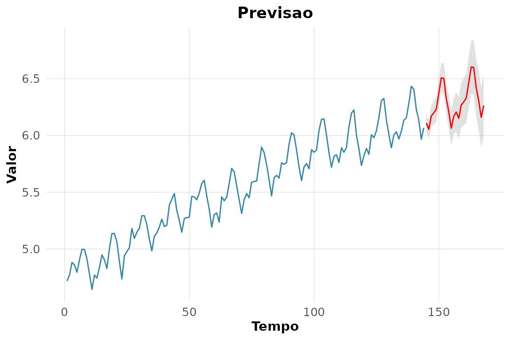
9. Média móvel de 12 meses.
head(rnp_media_movel(AirPassengers, k = 12), 8)
#> # A tibble: 8 × 3
#> tempo original media_movel
#> <int> <dbl> <dbl>
#> 1 1 112 NaN
#> 2 2 118 NaN
#> 3 3 132 NaN
#> 4 4 129 NaN
#> 5 5 121 NaN
#> 6 6 135 NaN
#> 7 7 148 127.
#> 8 8 148 127.10. Suavização exponencial.
head(rnp_suavizacao_exponencial(AirPassengers), 6)
#> # A tibble: 6 × 3
#> tempo original suavizada
#> <int> <dbl> <dbl>
#> 1 1 112 112
#> 2 2 118 114.
#> 3 3 132 119.
#> 4 4 129 122.
#> 5 5 121 122.
#> 6 6 135 126.11. Decomposição de nottem.
rnp_ts_decomposicao(nottem)$componentes |> head()
#> # A tibble: 6 × 6
#> observacao tempo observada tendencia sazonal aleatorio
#> <int> <dbl> <dbl> <dbl> <dbl> <dbl>
#> 1 1 1920 40.6 NA -9.34 NA
#> 2 2 1920. 40.8 NA -9.90 NA
#> 3 3 1920. 44.4 NA -6.95 NA
#> 4 4 1920. 46.7 NA -2.76 NA
#> 5 5 1920. 54.1 NA 3.45 NA
#> 6 6 1920. 58.5 NA 8.99 NA12. Holt-Winters em AirPassengers.
rnp_ts_holt_winters(AirPassengers)$parametros
#> # A tibble: 1 × 3
#> alpha beta gamma
#> <dbl> <dbl> <dbl>
#> 1 0.248 0.0345 113. Periodograma de sunspot.year.
periodo <- rnp_ts_periodograma(sunspot.year)
periodo[which.max(periodo$densidade), ]
#> # A tibble: 1 × 3
#> frequencia periodo densidade
#> <dbl> <dbl> <dbl>
#> 1 0.09 11.1 57689.O pico do periodograma reproduz o conhecido ciclo solar de cerca de 11 anos.
14. VAR(2) e causalidade de Granger (mdeaths,
fdeaths).
rnp_ts_var(cbind(mdeaths, fdeaths), p = 2)$granger
#> # A tibble: 2 × 4
#> causa efeito estatistica_f p_valor
#> <chr> <chr> <dbl> <dbl>
#> 1 fdeaths mdeaths 1.44 0.244
#> 2 mdeaths fdeaths 2.73 0.072415. GARCH(1,1) numa série de retornos.
Capítulo 9 — Modelos lineares generalizados e extensões
1. GLM Poisson para
breaks ~ wool + tension.
pois <- rnp_glm(breaks ~ wool + tension, warpbreaks, familia = "poisson")
pois$coeficientes
#> # A tibble: 4 × 7
#> termo estimativa erro_padrao estatistica p_valor ic_inf ic_sup
#> <chr> <dbl> <dbl> <dbl> <dbl> <dbl> <dbl>
#> 1 (Intercept) 3.69 0.0454 81.3 0 3.60 3.78
#> 2 woolB -0.206 0.0516 -3.99 0.0001 -0.307 -0.105
#> 3 tensionM -0.321 0.0603 -5.33 0 -0.439 -0.203
#> 4 tensionH -0.518 0.064 -8.11 0 -0.644 -0.393A tensão alta reduz a taxa de quebras; a razão de taxas (exponencial do coeficiente) fica abaixo de 1.
2. Diagnóstico de superdispersão.
rnp_glm_diagnosticos(pois)$testes
#> # A tibble: 3 × 4
#> medida valor p_valor interpretacao
#> <chr> <dbl> <dbl> <chr>
#> 1 dispersao 4.26 NA superdispersao
#> 2 deviance/gl 4.21 NA NA
#> 3 qui-quadrado de Pearson 213. 0 falta de ajuste/superdispersao3. Binomial negativa em quine e comparação de
AIC.
bn <- rnp_binomial_negativa(Days ~ Sex + Age, quine)
c(poisson = rnp_glm(Days ~ Sex + Age, quine, familia = "poisson")$objeto$aic,
binom_neg = bn$aic)
#> poisson binom_neg
#> 2506.752 1119.813O AIC menor da binomial negativa confirma a superdispersão da contagem de faltas.
4. GLM binomial am ~ wt + hp.
rnp_glm(am ~ wt + hp, mtcars, familia = "binomial")$coeficientes
#> # A tibble: 3 × 7
#> termo estimativa erro_padrao estatistica p_valor ic_inf ic_sup
#> <chr> <dbl> <dbl> <dbl> <dbl> <dbl> <dbl>
#> 1 (Intercept) 18.9 7.44 2.53 0.0113 4.28 33.5
#> 2 wt -8.08 3.07 -2.63 0.0084 -14.1 -2.07
#> 3 hp 0.0363 0.0177 2.04 0.0409 0.0015 0.0715. Modelo de odds proporcionais à satisfação
(housing).
rnp_regressao_ordinal(Sat ~ Infl + Type, housing, pesos = housing$Freq)$coeficientes
#> # A tibble: 5 × 5
#> termo estimativa erro_padrao p_valor odds_ratio
#> <chr> <dbl> <dbl> <dbl> <dbl>
#> 1 InflMedium 0.548 0.104 0 1.73
#> 2 InflHigh 1.24 0.126 0 3.45
#> 3 TypeApartment -0.522 0.118 0 0.594
#> 4 TypeAtrium -0.289 0.153 0.0592 0.749
#> 5 TypeTerrace -1.01 0.150 0 0.3636. Modelo misto distance ~ age com intercepto
aleatório.
misto <- rnp_modelo_misto(distance ~ age, nlme::Orthodont,
aleatorio = ~ 1 | Subject)
misto$variancia
#> # A tibble: 3 × 2
#> componente variancia
#> <chr> <dbl>
#> 1 aleatorio 4.47
#> 2 residuo 2.05
#> 3 ICC 0.6867. Interpretação do ICC.
v <- misto$variancia$variancia
v[1] / sum(v) # fração da variância entre indivíduos
#> [1] 0.6204959Boa parte da variabilidade está entre sujeitos, justificando o efeito aleatório.
8. GAM accel ~ s(times) em
mcycle.
gam_fit <- rnp_gam(accel ~ s(times), mcycle)
gam_fit$suaves
#> # A tibble: 1 × 4
#> termo edf estatistica p_valor
#> <chr> <dbl> <dbl> <dbl>
#> 1 s(times) 8.69 53.5 0Os graus de liberdade efetivos bem acima de 1 revelam forte não-linearidade.
9. Efeito suave estimado.
rnp_grafico_efeitos(gam_fit)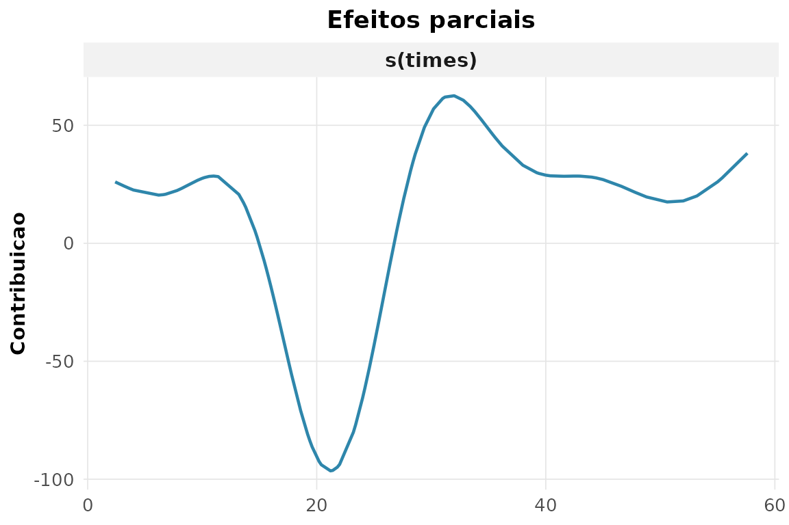
10. Deviance explicada: GAM vs linear.
c(gam = summary(gam_fit$objeto)$dev.expl,
linear = summary(lm(accel ~ times, mcycle))$r.squared)
#> gam linear
#> 0.79757044 0.08785493O termo suave capta a relação que a reta não consegue.
11. GLM Gama (ligação log).
warp_pos <- transform(warpbreaks, breaks = breaks + 0.5)
rnp_glm(breaks ~ wool + tension, warp_pos, familia = "gamma")$coeficientes
#> # A tibble: 4 × 7
#> termo estimativa erro_padrao estatistica p_valor ic_inf ic_sup
#> <chr> <dbl> <dbl> <dbl> <dbl> <dbl> <dbl>
#> 1 (Intercept) 3.68 0.102 36.0 0 3.48 3.88
#> 2 woolB -0.179 0.102 -1.75 0.0864 -0.379 0.0215
#> 3 tensionM -0.288 0.125 -2.30 0.0254 -0.534 -0.0431
#> 4 tensionH -0.501 0.125 -4.00 0.0002 -0.746 -0.25612. Resíduos de deviance do modelo Poisson.
rnp_glm_diagnosticos(pois)$testes
#> # A tibble: 3 × 4
#> medida valor p_valor interpretacao
#> <chr> <dbl> <dbl> <chr>
#> 1 dispersao 4.26 NA superdispersao
#> 2 deviance/gl 4.21 NA NA
#> 3 qui-quadrado de Pearson 213. 0 falta de ajuste/superdispersaoCapítulo 10 — Aprendizado de máquina
Os blocos abaixo dependem dos motores do tidymodels
(rpart, ranger, glmnet,
kknn). O código é exibido sempre; a execução ocorre quando
esses pacotes estão disponíveis.
1. Partição 70/30 estratificada por espécie.
sp <- rnp_ml_particao(iris, prop = 0.7, estrato = "Species")
sp
#> <Training/Testing/Total>
#> <105/45/150>2. Validação cruzada com 5 folds.
cv <- rnp_ml_cv(iris, v = 5, estrato = "Species")
cv
#> # 5-fold cross-validation using stratification
#> # A tibble: 5 × 2
#> splits id
#> <list> <chr>
#> 1 <split [120/30]> Fold1
#> 2 <split [120/30]> Fold2
#> 3 <split [120/30]> Fold3
#> 4 <split [120/30]> Fold4
#> 5 <split [120/30]> Fold53. Receita que normaliza os preditores.
rnp_ml_receita(Species ~ ., iris, passos = c("normalizar"))4. Árvore de decisão e acurácia no teste.
arvore <- rnp_ml_ajustar(rnp_ml_arvore("classificacao"), Species ~ ., sp)
arvore$metricas
#> # A tibble: 3 × 4
#> .metric .estimator .estimate .config
#> <chr> <chr> <dbl> <chr>
#> 1 accuracy multiclass 0.933 pre0_mod0_post0
#> 2 roc_auc hand_till 0.957 pre0_mod0_post0
#> 3 brier_class multiclass 0.0656 pre0_mod0_post05. Importância das variáveis.
rnp_ml_importancia(arvore$modelo)
#> # A tibble: 4 × 2
#> variavel importancia
#> <chr> <dbl>
#> 1 Petal.Length 65.1
#> 2 Petal.Width 61.6
#> 3 Sepal.Length 46.6
#> 4 Sepal.Width 26.56. Tunagem do custo de complexidade.
arvore_tune <- rnp_ml_arvore("classificacao",
custo_complexidade = tune::tune())
rnp_ml_tunagem(arvore_tune, Species ~ ., cv, grade = 5)$melhores
#> # A tibble: 5 × 7
#> cost_complexity .metric .estimator mean n std_err .config
#> <dbl> <chr> <chr> <dbl> <dbl> <dbl> <chr>
#> 1 0 accuracy multiclass 0.947 5 0.017 pre0_mod1_post0
#> 2 0 accuracy multiclass 0.947 5 0.017 pre0_mod2_post0
#> 3 0 accuracy multiclass 0.947 5 0.017 pre0_mod3_post0
#> 4 0.0006 accuracy multiclass 0.947 5 0.017 pre0_mod4_post0
#> 5 0.0971 accuracy multiclass 0.94 5 0.0194 pre0_mod5_post07. Floresta aleatória vs árvore.
floresta <- rnp_ml_ajustar(rnp_ml_floresta("classificacao"), Species ~ ., sp)
dplyr::bind_rows(arvore = arvore$metricas, floresta = floresta$metricas,
.id = "modelo")
#> # A tibble: 6 × 5
#> modelo .metric .estimator .estimate .config
#> <chr> <chr> <chr> <dbl> <chr>
#> 1 arvore accuracy multiclass 0.933 pre0_mod0_post0
#> 2 arvore roc_auc hand_till 0.957 pre0_mod0_post0
#> 3 arvore brier_class multiclass 0.0656 pre0_mod0_post0
#> 4 floresta accuracy multiclass 0.933 pre0_mod0_post0
#> 5 floresta roc_auc hand_till 0.994 pre0_mod0_post0
#> 6 floresta brier_class multiclass 0.0467 pre0_mod0_post08. Modelo regularizado (glmnet) para regressão em
mtcars.
sp_reg <- rnp_ml_particao(mtcars, prop = 0.7)
rnp_ml_ajustar(rnp_ml_regularizada("regressao"), mpg ~ ., sp_reg)$metricas
#> # A tibble: 2 × 4
#> .metric .estimator .estimate .config
#> <chr> <chr> <dbl> <chr>
#> 1 rmse standard 3.27 pre0_mod0_post0
#> 2 rsq standard 0.876 pre0_mod0_post09. Comparação por validação cruzada.
Usamos o problema binário de Pima.tr (a regressão
regularizada multinomial não se aplica diretamente a três classes):
specs <- list(arvore = rnp_ml_arvore("classificacao"),
floresta = rnp_ml_floresta("classificacao"),
regular = rnp_ml_regularizada("classificacao"))
cv_pima <- rnp_ml_cv(Pima.tr, v = 5, estrato = "type")
rnp_ml_comparar(specs, type ~ ., cv_pima)$tabela
#> # A tibble: 9 × 7
#> .metric .estimator mean n std_err .config modelo
#> <chr> <chr> <dbl> <dbl> <dbl> <chr> <chr>
#> 1 accuracy binary 0.695 5 0.0298 pre0_mod0_post0 arvore
#> 2 brier_class binary 0.293 5 0.0276 pre0_mod0_post0 arvore
#> 3 roc_auc binary 0.644 5 0.0203 pre0_mod0_post0 arvore
#> 4 accuracy binary 0.740 5 0.0261 pre0_mod0_post0 floresta
#> 5 brier_class binary 0.166 5 0.007 pre0_mod0_post0 floresta
#> 6 roc_auc binary 0.818 5 0.0173 pre0_mod0_post0 floresta
#> 7 accuracy binary 0.73 5 0.0088 pre0_mod0_post0 regular
#> 8 brier_class binary 0.179 5 0.0021 pre0_mod0_post0 regular
#> 9 roc_auc binary 0.809 5 0.0107 pre0_mod0_post0 regular10. Predições para novos dados.
rnp_ml_prever(floresta$modelo, iris[c(1, 60, 120), ], tipo = "classe")
#> # A tibble: 3 × 1
#> .pred_class
#> <fct>
#> 1 setosa
#> 2 versicolor
#> 3 versicolor11. Classificador de diabetes em Pima.tr e AUC
no teste.
sp_pima <- rnp_ml_particao(Pima.tr, prop = 0.7, estrato = "type")
diab <- rnp_ml_ajustar(rnp_ml_floresta("classificacao"), type ~ ., sp_pima)
diab$metricas
#> # A tibble: 3 × 4
#> .metric .estimator .estimate .config
#> <chr> <chr> <dbl> <chr>
#> 1 accuracy binary 0.754 pre0_mod0_post0
#> 2 roc_auc binary 0.842 pre0_mod0_post0
#> 3 brier_class binary 0.156 pre0_mod0_post012. Efeito da profundidade da árvore (sub/sobreajuste).
sapply(c(2, 5, 30), function(prof) {
m <- rnp_ml_ajustar(rnp_ml_arvore("classificacao", profundidade_max = prof),
Species ~ ., sp)
m$metricas$.estimate[m$metricas$.metric == "accuracy"]
})
#> [1] 0.8889 0.9333 0.9333Árvores muito profundas tendem a decorar o treino; a validação ajuda a achar o ponto de equilíbrio.
Capítulo 11 — Avaliação de modelos preditivos
pima_fit <- glm(type ~ glu + bmi + age, Pima.tr, family = binomial())
prob_pima <- predict(pima_fit, type = "response")
obs_bin <- ifelse(Pima.tr$type == "Yes", 1, 0)
pred_bin <- ifelse(prob_pima > 0.5, 1, 0)1. Todas as métricas de classificação no limiar 0,5.
rnp_metricas_classificacao(Pima.tr$type, ifelse(prob_pima > 0.5, "Yes", "No"),
positivo = "Yes")
#> # A tibble: 8 × 2
#> metrica valor
#> <chr> <dbl>
#> 1 acuracia 0.76
#> 2 precisao 0.672
#> 3 revocacao 0.574
#> 4 especificidade 0.856
#> 5 f1 0.619
#> 6 f_beta 0.619
#> 7 mcc 0.448
#> 8 acuracia_balanceada 0.7152. F1 versus acurácia em dados desbalanceados.
prop.table(table(Pima.tr$type))
#>
#> No Yes
#> 0.66 0.34Como há mais casos negativos, a acurácia é puxada pela classe majoritária, enquanto o F1 reflete o desempenho na classe positiva (diabéticas).
3. Escore de Brier e escore de habilidade.
rnp_brier(obs_bin, prob_pima)
#> # A tibble: 1 × 3
#> brier brier_referencia escore_habilidade
#> <dbl> <dbl> <dbl>
#> 1 0.156 0.224 0.3054. Calibração (Hosmer-Lemeshow).
rnp_calibracao(obs_bin, prob_pima)$hosmer_lemeshow
#> # A tibble: 1 × 3
#> estatistica gl p_valor
#> <dbl> <int> <dbl>
#> 1 11.7 8 0.1635. Estatística KS de separação.
rnp_ks_classificador(obs_bin, prob_pima, positivo = 1)$ks
#> [1] 0.56466. Curva precisão-revocação e AUC-PR.
rnp_curva_precisao_revocacao(obs_bin, prob_pima, positivo = 1)$auc_pr
#> [1] 0.70857. Curvas de lift e de ganho acumulado.
rnp_curva_lift(obs_bin, prob_pima, positivo = 1)$grafico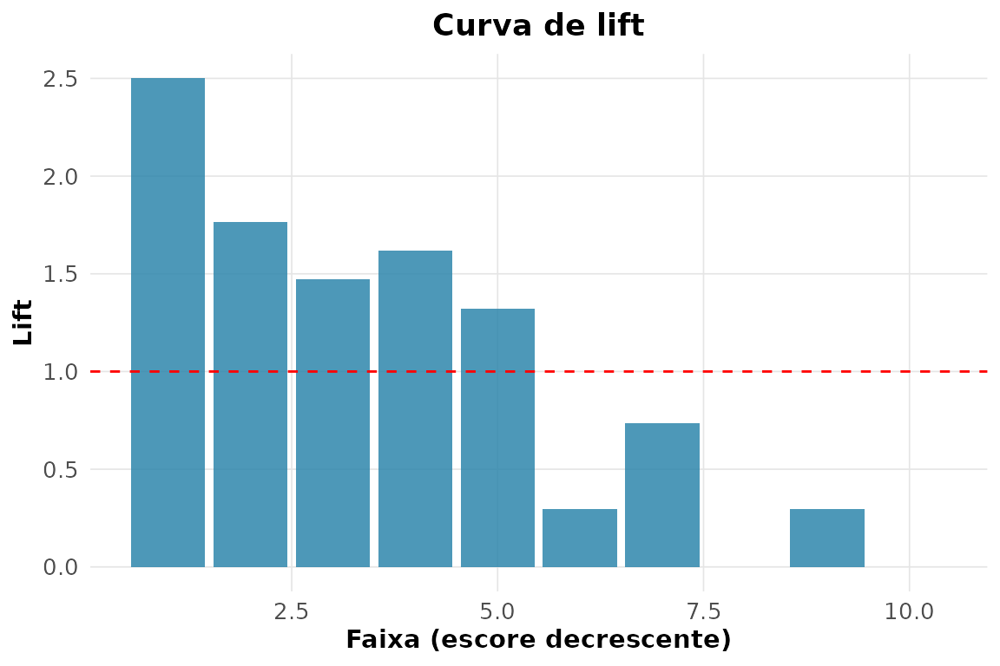
rnp_curva_ganho(obs_bin, prob_pima, positivo = 1)$grafico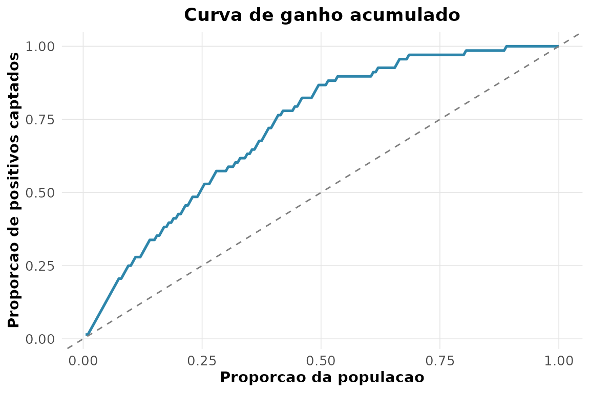
8. Teste de DeLong: modelo completo vs só
glu.
prob_glu <- predict(glm(type ~ glu, Pima.tr, family = binomial()),
type = "response")
rnp_comparar_roc(obs_bin, prob_pima, prob_glu, positivo = 1)
#> # A tibble: 1 × 5
#> auc1 auc2 diferenca z p_valor
#> <dbl> <dbl> <dbl> <dbl> <dbl>
#> 1 0.836 0.789 0.0465 2.28 0.02269. Sensibilidade, especificidade e razões de verossimilhança.
rnp_acuracia_diagnostica(obs_bin, pred_bin, positivo = 1)
#> # A tibble: 8 × 2
#> metrica valor
#> <chr> <dbl>
#> 1 sensibilidade 0.574
#> 2 especificidade 0.856
#> 3 vpp 0.672
#> 4 vpn 0.796
#> 5 razao_veross_pos 3.98
#> 6 razao_veross_neg 0.498
#> 7 acuracia 0.76
#> 8 prevalencia 0.3410. Métricas de regressão
(medv ~ rm + lstat).
rnp_metricas_regressao(Boston$medv, predict(lm(medv ~ rm + lstat, Boston)))
#> # A tibble: 5 × 2
#> metrica valor
#> <chr> <dbl>
#> 1 rmse 5.52
#> 2 mae 3.95
#> 3 mape 20.8
#> 4 r2 0.639
#> 5 rmse_relativo 0.24511. Modelo simples vs múltiplo.
simples <- rnp_metricas_regressao(Boston$medv, predict(lm(medv ~ rm, Boston)))
multiplo <- rnp_metricas_regressao(Boston$medv,
predict(lm(medv ~ rm + lstat + crim, Boston)))
merge(simples, multiplo, by = "metrica", suffixes = c("_simples", "_multiplo"))
#> metrica valor_simples valor_multiplo
#> 1 mae 4.4478 3.8913
#> 2 mape 25.7673 20.0143
#> 3 r2 0.4835 0.6459
#> 4 rmse 6.6031 5.4678
#> 5 rmse_relativo 0.2930 0.242712. Impacto de um outlier: RMSE vs MAE.
obs_out <- Boston$medv; obs_out[1] <- 500
pred <- predict(lm(medv ~ rm + lstat, Boston))
rnp_metricas_regressao(obs_out, pred)[
rnp_metricas_regressao(obs_out, pred)$metrica %in% c("rmse", "mae"), ]
#> # A tibble: 2 × 2
#> metrica valor
#> <chr> <dbl>
#> 1 rmse 21.7
#> 2 mae 4.87O RMSE dispara com o outlier, enquanto o MAE — por não elevar o erro ao quadrado — é bem menos afetado.
13. Matriz de custo (falso negativo custa o triplo do falso positivo).
O pacote não traz uma função dedicada; a matriz de confusão e os pesos resolvem o problema diretamente:
cm <- rnp_matriz_confusao(obs_bin, pred_bin)$matriz
fn <- cm[1, 2]; fp <- cm[2, 1] # falsos negativos e positivos
custo_total <- 3 * fn + 1 * fp
c(falsos_negativos = fn, falsos_positivos = fp, custo_total = custo_total)
#> falsos_negativos falsos_positivos custo_total
#> 19 29 86Atribuindo peso 3 ao falso negativo, o custo total penaliza mais os diabéticos não detectados — coerente com a gravidade clínica desse erro.